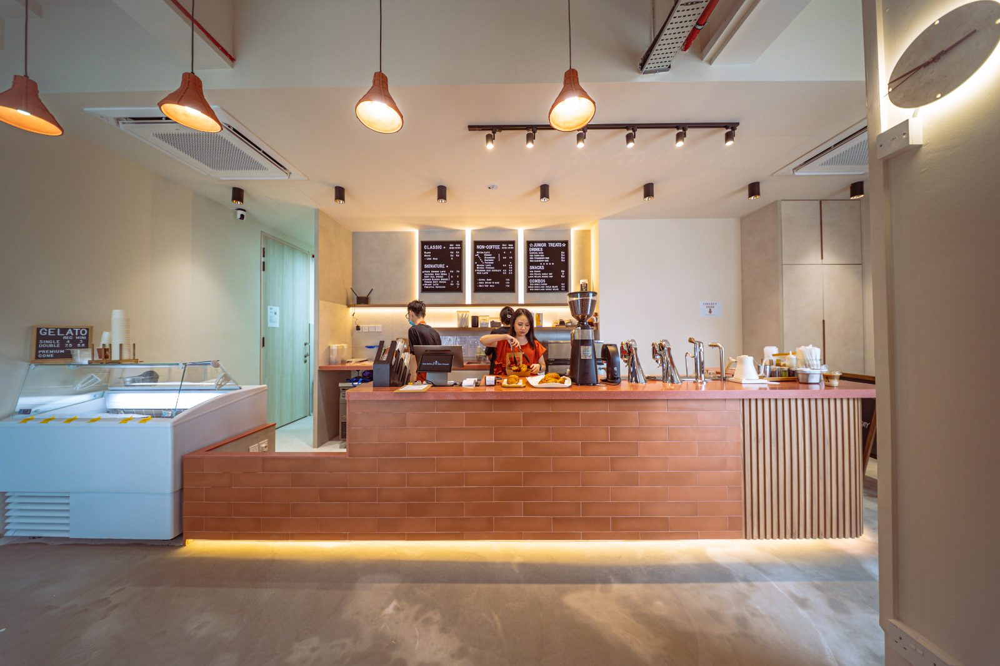
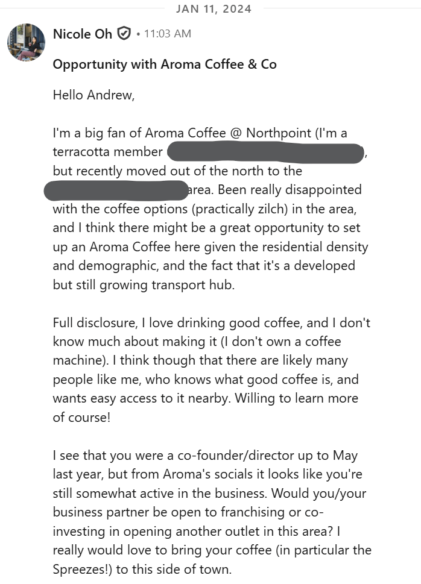
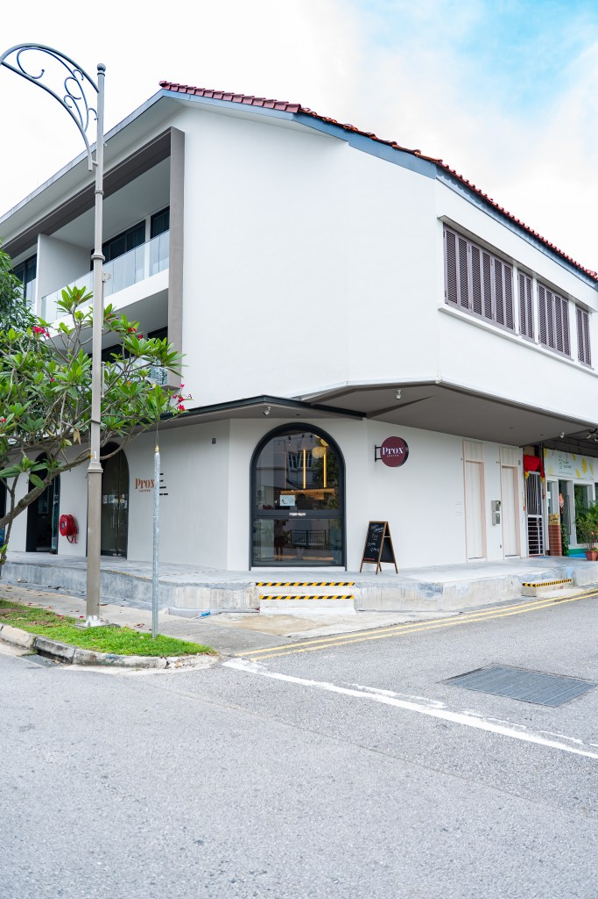
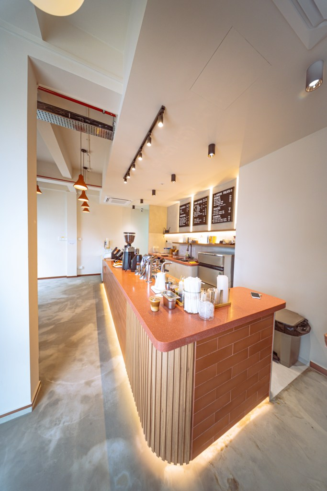
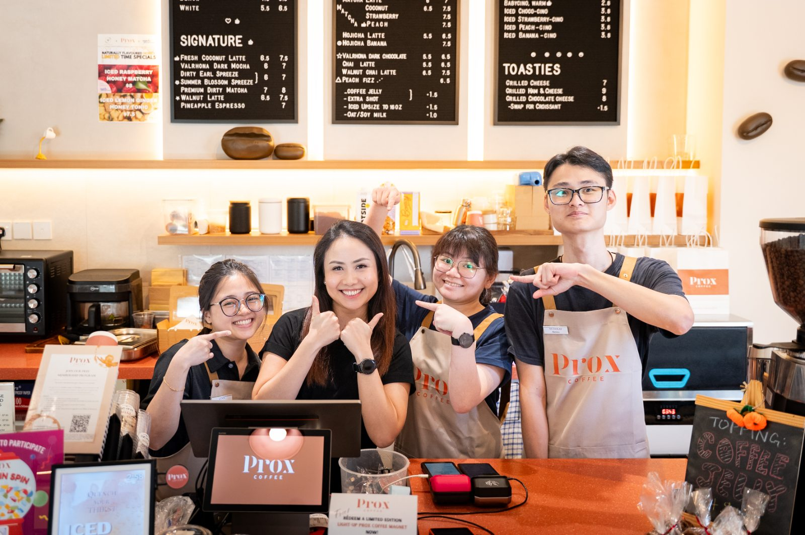
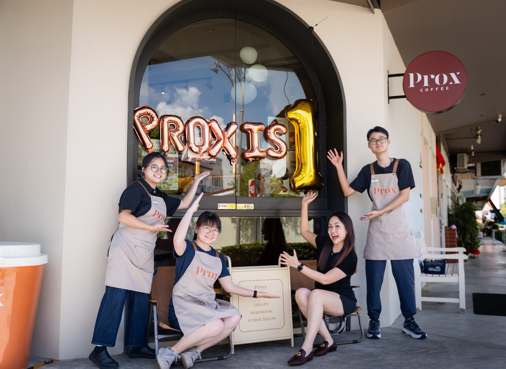
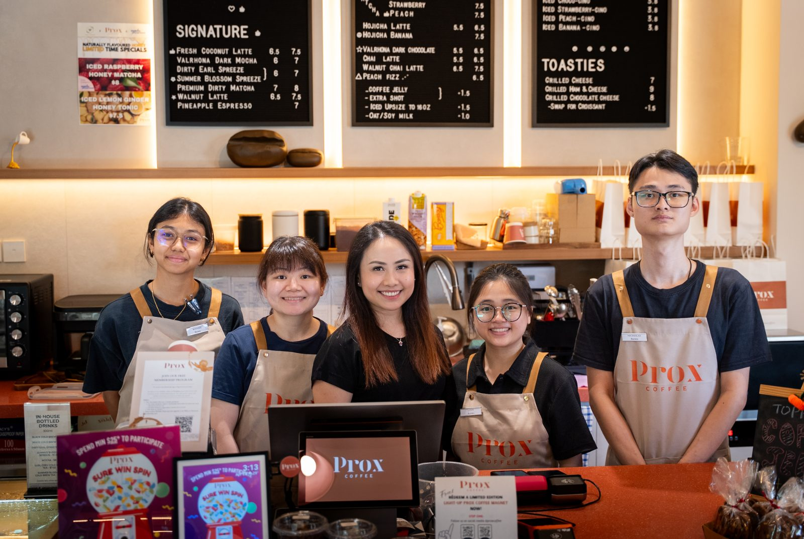

The short version
2021
Tea was my entire personality
The funny thing is – I didn’t even use to drink coffee. Tea was my beverage (and my ex-colleagues will tell you, my entire personality).
In 2021, when I was still deep in the postpartum haze with my daughter, I came to know that a cafe called Aroma Coffee & Co was opening at Northpoint City, near where I lived then. Because of severe sleep deprivation, I tried out their “Spreeze” drinks — tea-infused lattes.
Boom. The Summer Blossom Spreeze became an addiction. The presence of tea was my gateway into the world of coffee. I started drinking regular lattes and cappuccinos too. I became a very-regular customer, and loved how friendly everyone working there was, even though it was just a takeaway spot in the basement of a large mall.
End 2023
Something tangible
Fast-forward to end-2023. I had just moved away from the North of Singapore, and started to really, really, miss the coffee I used to get every other day. Without any decent cafes within the proximity of where I lived, I started to explore the idea of opening my own branch, near me.
With my daughter getting a bit older, I was also inspired to build a business that is tangible — one she can understand and see, versus only seeing me crouched over my laptop, sending emails and attending Zoom meetings. This became even more important to me as I witnessed the rise of AI and technology. I felt the urge to be contrarian and go into one of the most fundamental businesses in history that can never be replaced: the sale of food & beverage, along with hospitality.
But what the heck do I know about running F&B? And was I going to invest 6 figures just to open a franchise because I missed the coffee? Irrational.
After ruminating for ages, my therapist quipped
“Just ask if they are even franchising lah. What’s the worst that can happen?”
1 May 2024
One LinkedIn message later
So after signing up for LinkedIn Premium (“It’s free for the first month right? You don’t even lose anything”), I reached out to the founder of Aroma Coffee & Co.
I then found out that they were looking to sell the business – only the outlet at Frasers Tower though, as the outlet at Northpoint City was closing due to a massive rent increase.
One thing led to another and on 1 May 2024, I officially took over the business.
On the surface, nothing much changed. Same menu, same staff, same everything. But after a closer look, I realised we were not going to be sustainable with just one outlet. And besides, what I really wanted was to run a neighbourhood cafe — ideally in my own neighbourhood. The CBD outlet is great for goodwill and “brand-name address” purposes, but there wasn’t much I could do there on weekends.

July 2024
Looking for outlet #2
Within a month of taking over operations, I started looking for Outlet #2 — near where I lived, to open a cosy takeaway. But there were simply no viable units.
I stopped looking for a bit and focused on Frasers Tower. Many things had to be managed and fixed; there were always fires to be put out. It was rather overwhelming.
But some time in July, I felt the urge to check out CommercialGuru again — and immediately saw the shophouse unit at 36 Jalan Selaseh. Arranged a viewing, and fell in love with it.
It took some time to get it up and running after I signed the lease, but I genuinely had so much fun designing the space, coming up with the menu, and getting it to be what it is right now. A cafe for our neighbours, for our community.


We might not be the most “viral” or “trendy” cafe out there, but I take so much pride in seeing our regulars come back again and again, and in building relationships with the members of my team. Would there be a Prox Coffee #3?
If it’s meant to be, it’s meant to be.
Oh, hello team
First anniversary of the Seletar Hills outlet, April 2026. Ft. Nicole, Xuan, Lynn, Nicholas and Winniee.


